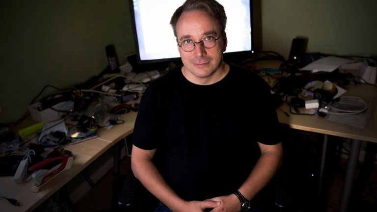

Изобретения

Линус Бенедикт Торвальдс — один из самых влиятельных инженеров-программистов в истории, создатель ядра Linux и распределенной системы контроля версий Git. Ниже приведены его ключевые технические достижения, карьерные вехи и главные мировые награды в строгом хронологическом порядке.
1. 1991–1999: Рождение Linux и мировое признание
1991 год: Будучи 21-летним студентом Хельсинкского университета, разработал и опубликовал первую версию ядра Linux (v0.01), которая впоследствии легла в основу миллионов операционных систем по всему миру (от Android до суперкомпьютеров).
1992 год: Принял историческое решение перевести ядро Linux на свободную лицензию GNU GPLv2, что обеспечило открытость кода и взрывной рост сообщества разработчиков.
1994 год: Выпустил первый стабильный релиз Linux 1.0.0, официально сделав систему готовой к коммерческому и промышленному использованию.
1996 год: Придумал идею и представил пингвина Tux в качестве официального талисмана Linux. В этом же году успешно защитил магистерскую диссертацию по теме «Linux: портативная операционная система».
1997 год: В знак признания заслуг в его честь был назван астероид (9793) Torvalds.
1998 год: Стал лауреатом престижной премии EFF Pioneer Award за вклад в развитие цифровых свобод.
2. 2000–2009: Создание Git и переезд в США
2000 год: Награжден Медалью Лавлейс от Британского компьютерного общества и занял 17-е место в опросе журнала Time «Человек века».
2001 год: Разделил авторитетную японскую награду Takeda Award с Ричардом Столлманом за социально-экономическое благополучие человечества.
2004 год: Журнал Time включил Линуса в список «100 самых влиятельных людей в мире».
2005 год: Всего за две недели создал распределенную систему контроля версий Git, которая сегодня является абсолютным мировым стандартом в разработке программного обеспечения.
2007 год: Стал ведущим техническим сотрудником (Fellow) в The Linux Foundation — некоммерческом консорциуме, где он по сей день продолжает координировать разработку ядра ядра Linux.
3. 2010 — настоящее время: Высшие научные награды
2012 год: Удостоен престижной премии Millennium Technology Prize (аналог Нобелевской премии в сфере технологий) за создание Linux. В этом же году включен в Зал славы Интернета.
2014 год: Награжден премией Computer Pioneer Award от Компьютерного сообщества IEEE и введен в Зал славы Музея компьютерной истории в Калифорнии.
2018 год: Получил награду IEEE Masaru Ibuka Consumer Electronics Award за огромный вклад в потребительскую электронику через развитие open-source решений.
2019 год: Стал лауреатом награды ACM SIGOPS Hall of Fame Award за фундаментальное влияние на архитектуру операционных систем.